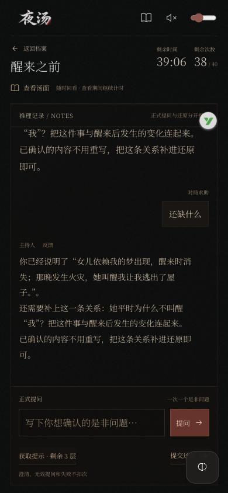

2026-10-27 · V0.9.3候选 · 仍未开放V1.0内测让判定有依据，让还原反馈具体
本阶段已结束，最新结果见主持修正结果。原过程记录继续保留。
本次改了什么
- 正式提问与还原使用独立证据协议，模型不能直接返回是/否/通关。
- 当前问题的内容必须被逐字证据覆盖；肯定和否定引用固定事实原文，漏掉错误尾句或编造引用会拒绝且不扣游戏次数。
- 四题核心节点拆成具体条件，每个已满足条件必须能引用当前文本或此前已确认实际问答；程序计算缺失项与完整度，提示和假设不能当成玩家已还原。
- 否定、冲突与通关发布前至多一次独立核对；格式或网络失败不自动重试。
- 未完整只问一个具体待连接关系，问题由已审阅的公开汤面锚点控制；冲突定位当前错误说法，只显示可公开的证据。
- 清楚的剧情断言不再因分类器误选而要求定位汤面；历史求助不能替换新的自足猜测。
- 复盘采用更正后的有效回答，原始问答继续保留用于追溯。
验证进度
118项Python检查、11项客户端检查通过。使用隔离的证据替身走查了静音开场、逐行汤面、明确事实问答、具体待连接问题、免费追问进度、完整还原与复盘；390像素手机布局无横向溢出，所有声音保持关闭。
引用、格式和调用边界可由程序核验；事实与说法之间是否真正支持，仍需要真实模型评估。发布前的独立核对使用同一模型，也可能重复犯错，所以这次必须运行玩家原话、错答历史干扰和跨题样例。
复盘预览中，“我每晚都能梦到女儿”的有效回答为“是”。只重算派生复盘，原始错误答复、更正记录和试玩数据保持原样。
实际原局的复盘预览 · Python结果 · 客户端结果

截图使用明确标注的离线证据替身，不代表真实模型已经判对。下一轮固定回归
计划12个场景，通常预计23次调用，硬上限24次。保留已用44次，原100次总上限继续有效，这阶段总账本最多到68次；累计费用上限仍为¥5。原试玩不会重新开始或扣次数。发生误判或异常就停止保留记录，结束或停止后删除临时密钥。
完整候选记录